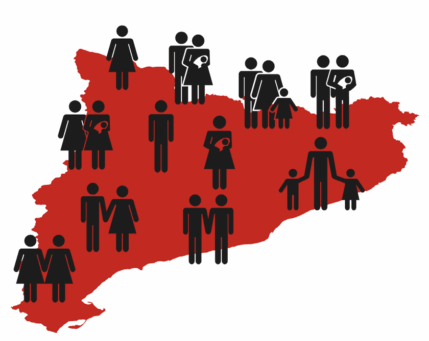

Estadístiques
+ Per saber-ne més2. Per què cal una institució antagònica?
L'elevat volum de graduats davant un cens reduït evidencia la greu precarietat del sector on el mercat és incapaç d'absorbir els nous creadors abocant-los a la inestabilitat laboral i a l'abandonament.

3. El Parlamalament, avui. Qui pot dedicar-se a l'art?
Tindràs opció a més ajuts, subvencions i beques per a la pràctica emergent.
El ser seleccionat abans dels 30 és important per no sentir la teva carrera jove a la escombraries. (i els que no ho aconseguim què!?)
Després necessitaràs condicions materials favorables, com tenir accés a la vivenda, tenir un taller i una estabilitat econòmica.
Candidats a artistes
Acumula CV, escala i connecta les oportunitats, un cop comences a guanyar no pots parar. No pensis en els altres candidats, és la llei natural del circuit artístic.
Durada de la carrera artística
Depèn de l'artista legitimat que siguis. Ser artista pot durar fins els 30 anys on has estat sostenint la teva pràctica mentres has estat estudiant o has pogut sostenir la teva pràctica amb concursos d'art jove i emergent. O pot durar menys gràcies a la seva intermitència, falta de conciliació i precarietat.